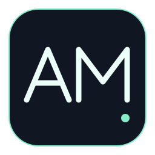

Aplicativo offline
Campo Seguro
Protótipo de Análise Preliminar de Risco criado na Maratona TIVIT, com registros em campo e fila de sincronização para períodos sem conexão.
SQLite · Aplicação web
Dados, automação e desenvolvimento
Sou técnico em Informática, estudo Análise e Desenvolvimento de Sistemas na FIAP e atuo como estagiário de Análise de Dados e Automação na Energisa Minas Rio.
Conheça meus projetos
Aplicativo offline
Protótipo de Análise Preliminar de Risco criado na Maratona TIVIT, com registros em campo e fila de sincronização para períodos sem conexão.
SQLite · Aplicação web